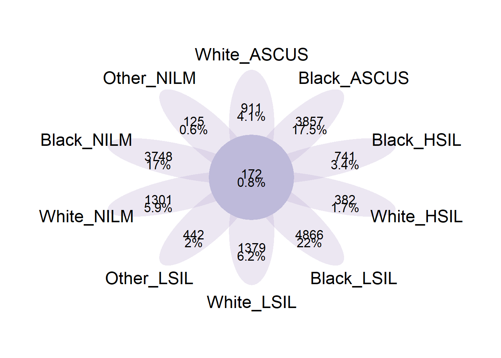
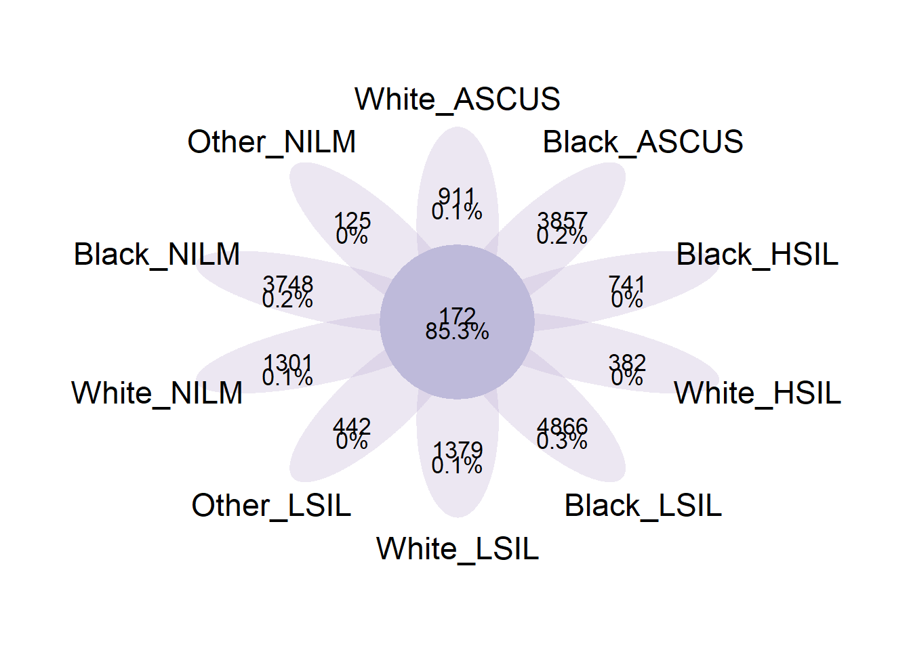
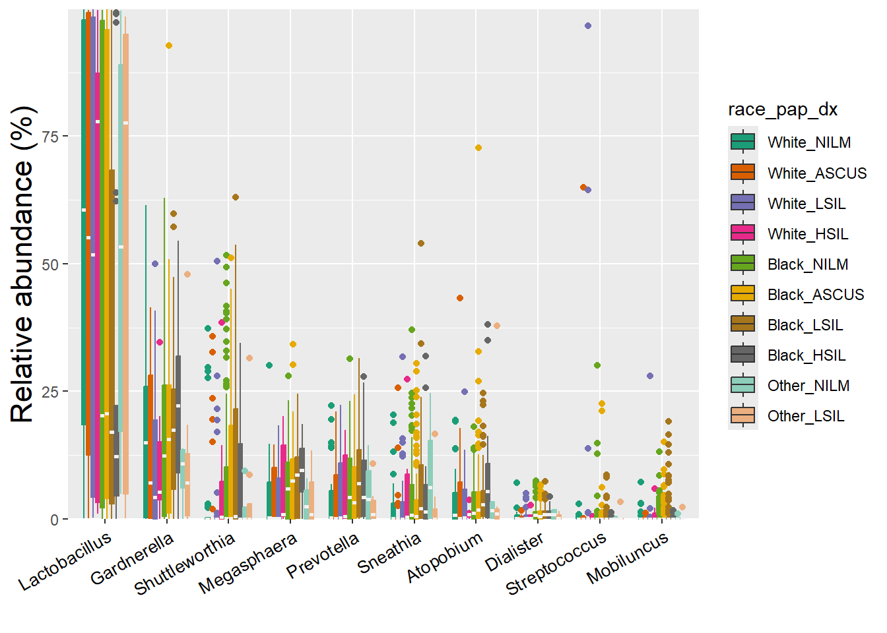
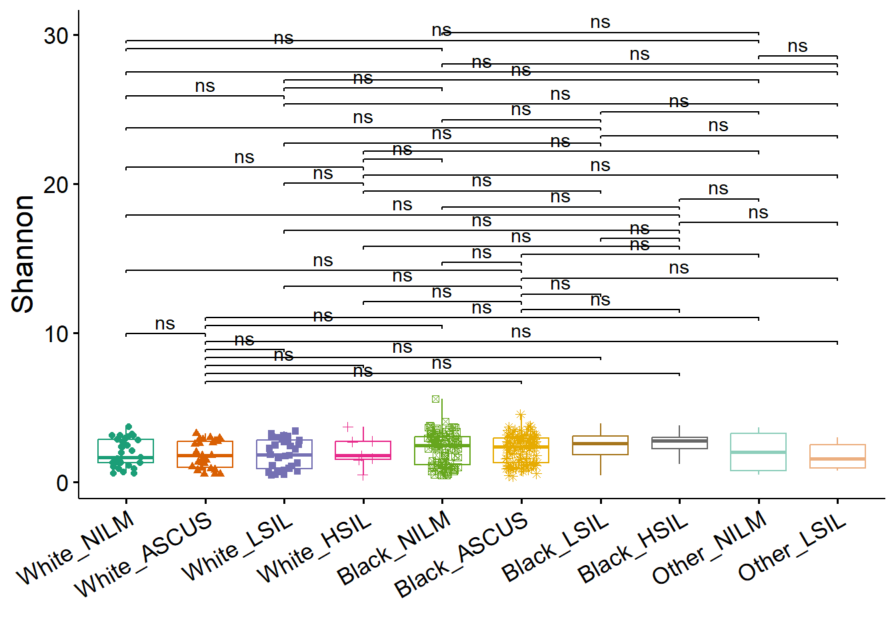
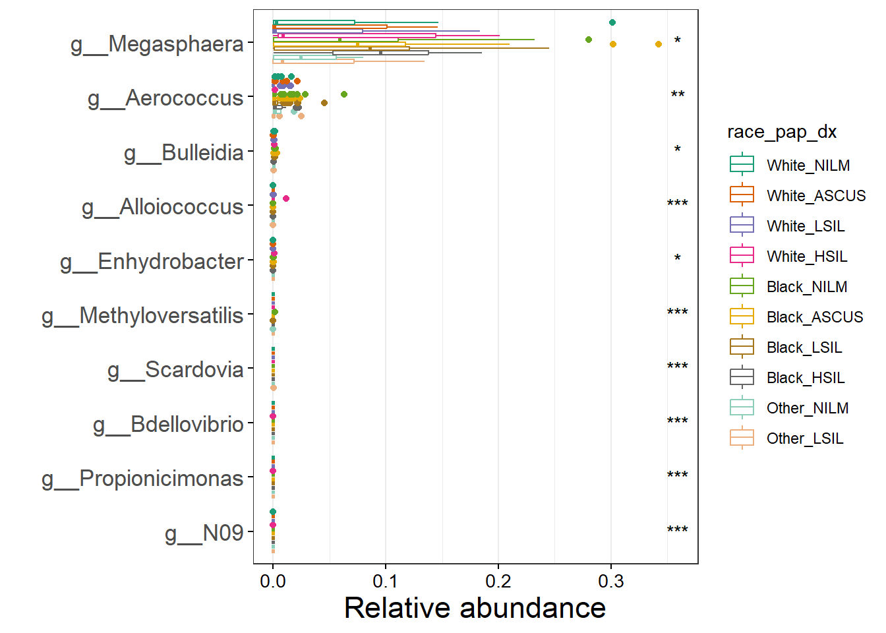

Differential Analysis of Race x Pap Diagnosis
Venn Diagrams
These Venn diagrams illustrate the overlap of microbial features (likely Amplicon Sequence Variants - ASVs, or Operational Taxonomic Units - OTUs) across the different categories.

Relative Abundances

Diversity metrics
Alpha diversity

Differential Analysis
